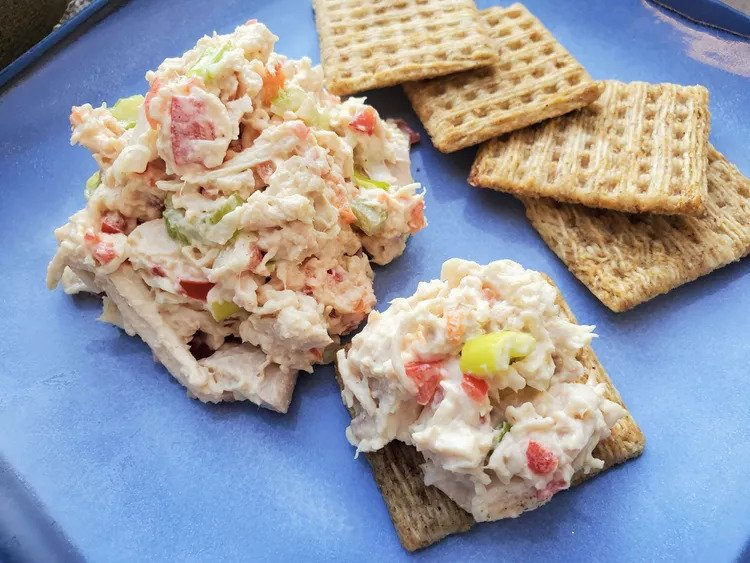

Turkey Salad

Perfect solution for Thanksgiving leftovers
This turkey salad recipe is a great spread for sandwiches or crackers. If you don't know what to do with leftover turkey, this is perfect!
Ingredients
- Turkey
- Vegetables: celery, green onions, red bell pepper
- Mayo and mustard
- Apple cider vinegar
- Sugar
- Salt
Steps
- Pulse the turkey and vegetables in a food processor until finely chopped.
- Transfer to a bowlm, then mix in the remaining ingredients.
- Cover and chill in the fridge for eight hours to allow the lavors to meld.